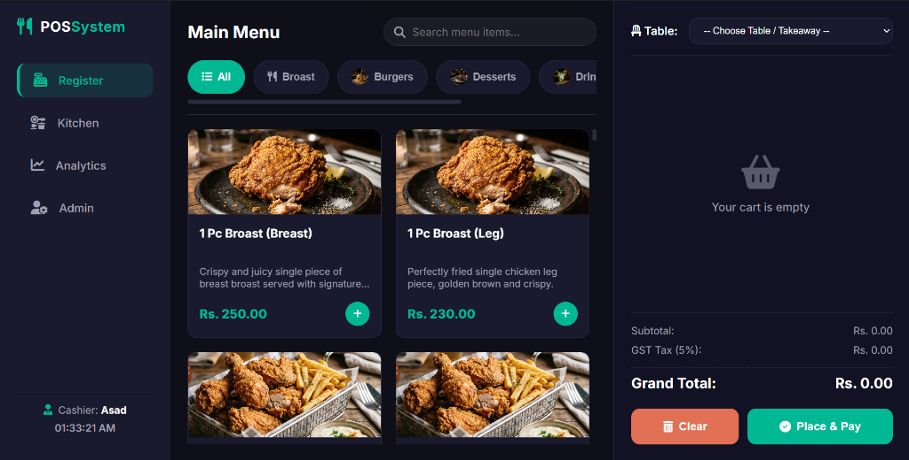
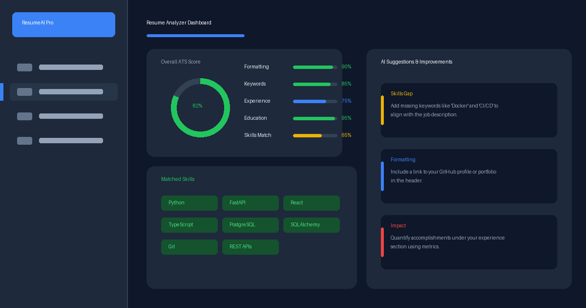
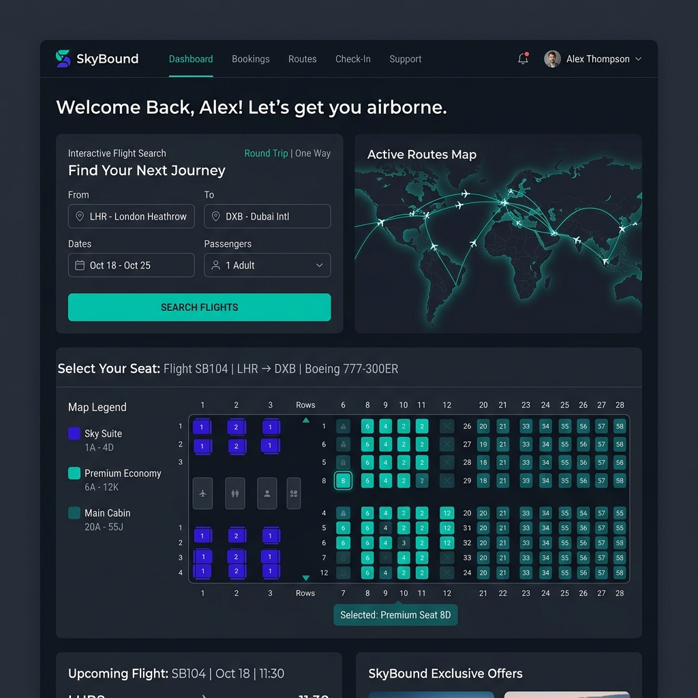

Object-oriented design
Modular, maintainable applications grounded in practical OOP principles.
Interactive introduction
Turn sound on for the full experience
Available for internships & collaboration
I’m Muhammad Asad, a Software Engineering undergraduate who turns ideas into reliable web, desktop, and systems projects.
// currently exploringbackend architecture

Hear my audio introduction...
const focus = [
'clean architecture',
'meaningful UX',
'continuous learning'
];{
"languages": ["C#", "Java", "Python", "JS"],
"frameworks": ["Django", ".NET", "React"],
"databases": ["PostgreSQL", "SQL"]
}01 / About me
Currently studying Software Engineering at Bahria University Karachi, I enjoy the complete arc of making software: understanding a problem, modelling it clearly, and delivering an experience people can use.
My work spans Java and Python applications, interactive JavaScript experiences, databases, and lower-level MIPS projects. I’m especially interested in thoughtful architecture, strong fundamentals, and the small details that make a product feel dependable.
Let’s build something usefulModular, maintainable applications grounded in practical OOP principles.
Database-aware applications with a focus on structure and dependable flows.
Responsive experiences that make complex concepts easier to explore.
Between idea & impact
Discover
I look for the real user need, constraints, and the smallest valuable outcome before choosing a solution. Collecting metrics and analyzing constraints ensures we build what is actually needed.
Design
Thoughtful structure, modular components, and sensible data flows make the code easier to scale and maintain. I focus on creating decoupled architectures that can easily evolve.
Build
Writing clean, maintainable code using solid OOP principles and design patterns. I focus on modular implementations, readability, and building robust backend services.
Refine
Iteration improves clarity, performance, and hardware-software integration. I refine code bottlenecks, write tests, and ensure maximum performance and responsive UX.
02 / Selected work
From developer tools to product interfaces, each project is an opportunity to practice better engineering decisions.

A native restaurant point-of-sale system with live order tracking, analytics, printable invoices, and a PostgreSQL-backed Django architecture.
View repository
A production-ready AI-powered resume analysis platform featuring automated ATS scoring, skill gap analysis, job matching, and PDF analysis reports.

An interactive home for sorting, pathfinding, graph algorithms, and classic puzzles with step-by-step visual learning.

An NLP-driven assistant that structures software requirement gathering and helps generate SRS documentation.

A smart candidate ranking engine using skill matching, experience scores, greedy optimisation, and an explainable max-heap flow.

A task manager built in MIPS Assembly, with task tracking, calendar views, and direct memory-status updates.

A story-led cryptography learning tool that turns encryption and decryption concepts into interactive visual modules.

A responsive restaurant experience with a dynamic menu and table reservation flow.

A polished take on the classic game, featuring live scoring, collision logic, and progressive difficulty.

A flight management system designed around MVC-style organisation and reusable domain logic.
03 / Toolkit
I choose the tools that suit the problem, then focus on clean implementation, sensible structure, and a dependable result.
04 / Journey
A foundation built through university work, project-driven experience, and a habit of shipping.
Bytecorp Technologies · Remote
Developing a production-style backend system through schema design, APIs, authentication, and PR-based mentor feedback.CodeAlpha · Remote
Delivered Java applications including a Student Grade Manager and Hotel Reservation System under project specifications.Bahria University Karachi Campus
Developing a rigorous foundation in software engineering, architecture, and computer science.05 / Contact
I’m open to internships, collaborative projects, and conversations about thoughtful software.